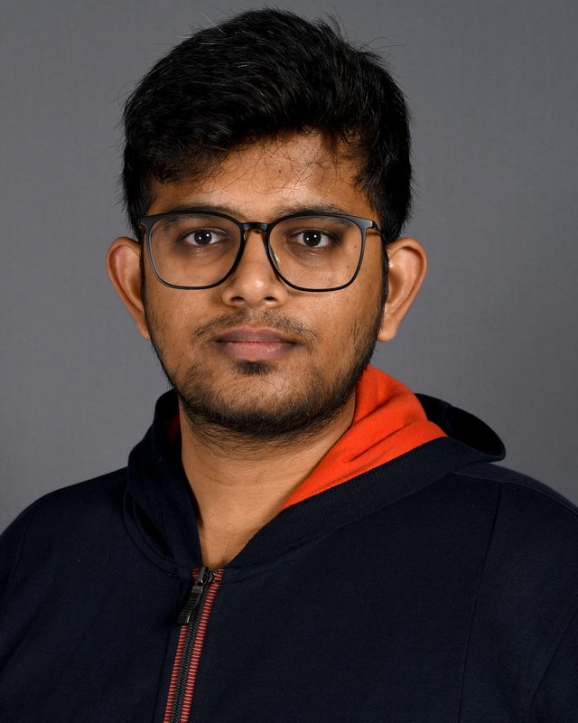
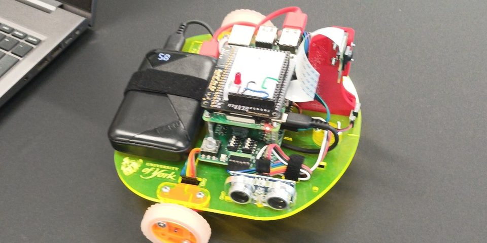
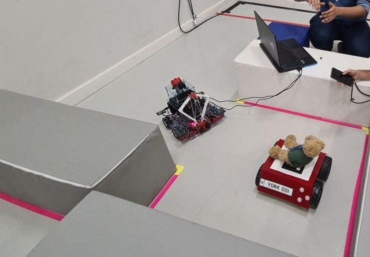

Intelligent Robotics
Completed a full-time MSc in Intelligent Robotics at the University of York (Sep 2023 – Sep 2024), focusing on autonomous systems, robotic perception and AI for real-world robots.
|
I build robots that map, navigate and respond to voice and vision — using ROS 2, SLAM, Nav2, OpenCV and LLM tool calling. MSc Intelligent Robotics graduate from the University of York, with 15 months as a software engineer at Virtusa behind me.

"The real promise of robots is not that they will do what humans do, but things humans cannot — reliably, at scale, in the world."
Harish Venkatesan
MSc Intelligent Robotics, University of York
01 · About
Engineer by training, roboticist by choice — I work at the intersection of software and intelligent machines.
Completed a full-time MSc in Intelligent Robotics at the University of York (Sep 2023 – Sep 2024), focusing on autonomous systems, robotic perception and AI for real-world robots.
15 months as an Associate Engineer – Technology at Virtusa, after a three-month internship — working on enterprise software delivery in agile teams.
Trained a custom YOLOv5 detector (86% mAP) for victim detection and built LLM tool-calling control for a ROS 2 robot, on top of AI and NLP studies during my B.E.
Led a 4-person MSc robotics team on the rescue robot, and a 6-person build challenge at Virtusa that still delivered after the team shrank to three, keeping people motivated and focused on delivery.
02 · Experience
From a national hackathon to industry software engineering.
Virtusa Consulting Services Pvt Ltd · Chennai, India
Contributed to enterprise software delivery across the full development lifecycle. Collaborated in agile environments, built and maintained scalable backend services, and navigated real production systems — sharpening the engineering instincts that now inform my robotics work.
Virtusa Consulting Services Pvt Ltd
Led a team of six through a three-month build challenge; when the team shrank to three, kept everyone motivated and still delivered the build. Supported backend tasks, testing and code reviews, and was converted to a full-time role after graduation.
Virtusa
Selected in the top 250 out of 100,000+ participants in Virtusa's national hiring hackathon, reaching the grand finale and earning a pre-placement offer of employment while still in my final year.
SP Robotics
Taught robotics to students alongside the group's senior staff, building my first hands-on experience with robots and explaining technical concepts clearly.
03 · Education
Academic foundations across software engineering and intelligent systems.
University of York, United Kingdom
Sep 2023 — Sep 2024 · Full-time
Covering autonomous systems, machine learning, robotic perception, SLAM, control theory, and human-robot interaction.
KPR Institute of Engineering and Technology, Coimbatore · Anna University
Aug 2018 — May 2022
Foundations in algorithms, data structures, operating systems and databases, with electives in Artificial Intelligence, Robotics, Natural Language Processing, IoT and Cloud Computing.
04 · Projects
Selected work across Robotics, AI, and Software Engineering.

A wheeled mobile robot that drives between two waypoints and back to its origin with no operator input, fusing IR and ultrasonic readings to detect obstacles reliably and steer around them.

Watch demoMSc team project (team lead, 4 engineers): a Mecanum-wheeled robot that navigates a maze, avoids obstacles with IR and ultrasonic sensors, and finds victims using a custom YOLOv5 model (86% mAP).
A 6-DOF UR5 arm modelled in MATLAB/Simulink, comparing a model-based computed-torque controller against PID for joint trajectory tracking.
TurtleBot3 explores an unknown office on its own with a custom frontier-exploration node, builds a LIDAR-only map with SLAM Toolbox, then localises with AMCL and runs a Nav2 patrol between rooms.
99.2% of reachable floor mapped · 12 goals · 38 m driven
Natural-language control on top of the Nav2 robot: spoken or typed commands like "go to the kitchen, then come back" are turned into navigation goals by an LLM using tool calling. The robot can also follow a person or target and avoids obstacles along the way.
A ROS 2 Jazzy system on Ubuntu 24.04, running in Gazebo simulation: a camera-equipped robot processes its live feed with OpenCV, and what it detects drives the robot's movement, steering it towards the target.
05 · Skills
Tools, languages, and frameworks I work with regularly.
06 · Certifications
Credentials in programming, data and AI, with links to verify where available.
Oracle University · Feb 2022
Google · Coursera · Sep 2021
Google · Coursera · Aug 2021
Google · Coursera · Aug 2021
SkillUp by Simplilearn · Jul 2021
Udemy · May 2020 · 16.5 hours
07 · Contact
I'm looking for my next role in robotics, computer vision or software engineering, and I'm always happy to talk ROS 2, perception, or anything that drives itself. The quickest way to reach me is email.
mrharishv29@gmail.comBased in York · open to relocating anywhere in the UK